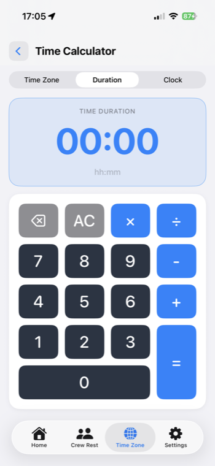
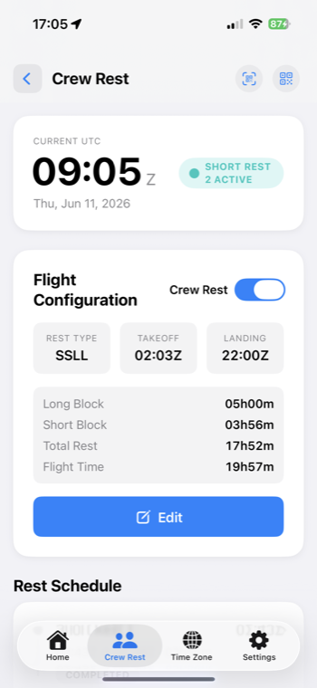
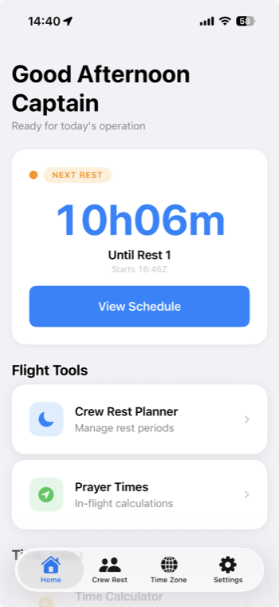

UTC Time Tools
Supports fast aviation time checks without turning simple arithmetic into a cockpit distraction.
- Duration arithmetic
- Clock arithmetic
- 24-hour wrap calculations
- UTC offset conversion
- Fast aviation time checks for review

SectorFlow keeps launch features compact, UTC-focused, and reviewable.
Supports fast aviation time checks without turning simple arithmetic into a cockpit distraction.

Helps pilots plan UTC rest periods and countdowns in a readable layout with reviewable assumptions.

Estimates UTC prayer-time references from GPS, route, or manual inputs while keeping outputs subject to user review.

Roadmap items are parked future concepts. They are shown for product direction only and are not presented as available launch features.